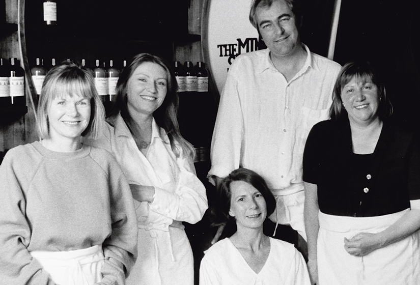
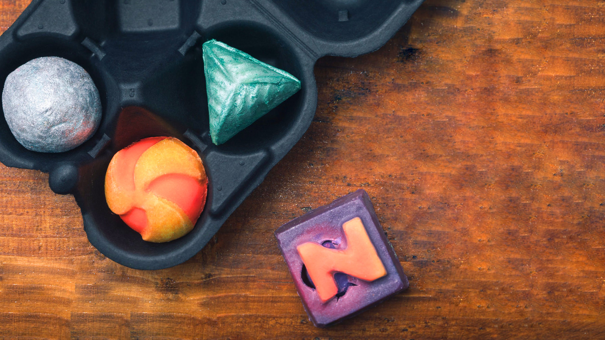
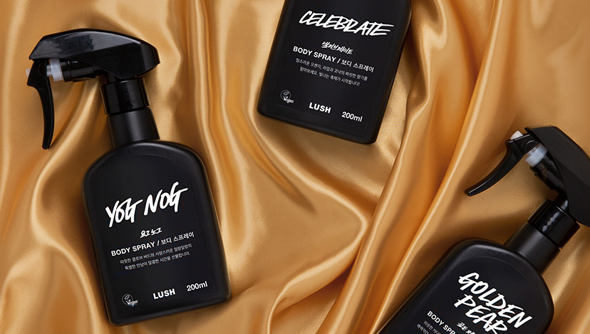
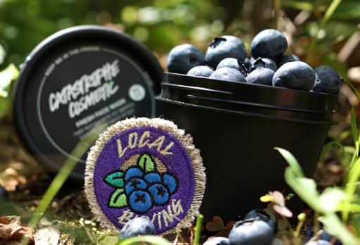
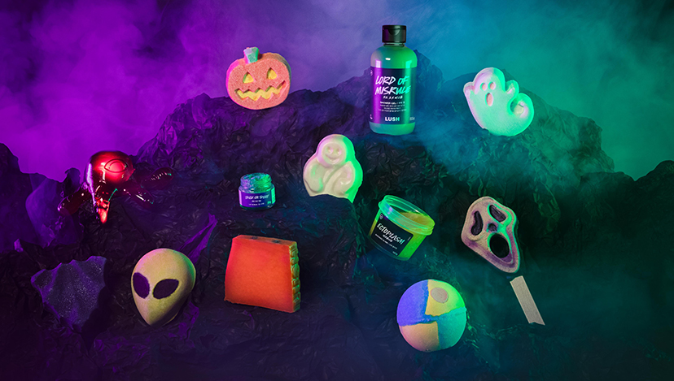
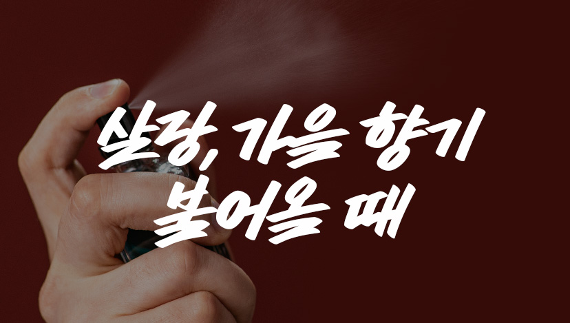
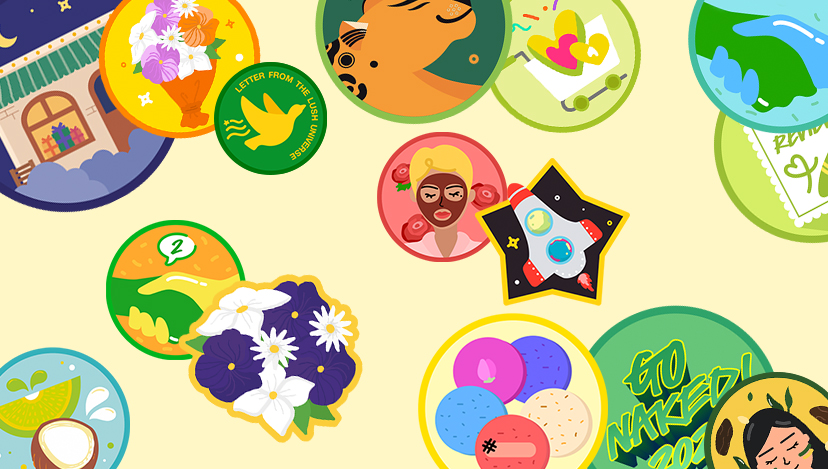
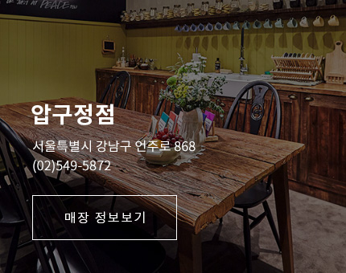
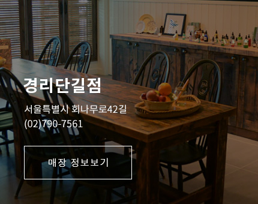

WE BELIVE "A LUSH LIFE"
러쉬는 자연에서 얻은 신선한 재료와 동물실험을 하지 않는 정직한 재료를 사용하여
모든 제품을 손으로 만듭니다. 더불어 공정거래,인권 보호,포장 최소화 등
다양한 캠페인 활동을 통해 기업 윤리와 신념을 알리고 있습니다.
현재 러쉬는 전 세계 50여 개국에서 900여 개 매장을 운영하고 있습니다.
한국은 러쉬의 네번째 해외 진출 국가이며 2002년 12월 24일 크리스마스 이브에 첫 선을 보였습니다.
현재 전국 70여 개 매장과 디지털 채널을 통해 러쉬의 철학이 담긴 제품과 긍정의 에너지를 나누고 있습니다.
Fresh Handmade Cosmetic 브랜드의 시작은 "LUSH"

나만 알고싶은 향기

Best

배쓰 밤
물을 받은 욕조에 넣으면 환상적인 빛깔이 펼쳐집니다! 진정한 휴식을 원하시나요?
질 좋은 에센셜 오일이 피부를 촉촉하게 감싸는
향기로운 입욕제 입니다.
복잡한 고민의 해답은 당신의 욕실에 있답니다.

Best
퍼퓸 스프레이
우아한 네롤리 오일로 기분 좋은 하루를!
피부에 뿌려 사용하는 제품으로 잔 향기가 인상적입니다.
상큼한 오렌지 꽃, 바닐라가 선사하는 은은한 싱그러움은 몸과 마음을 차분하게 달래줄 거예요.

New
페이스 마스크
얼굴과 몸에 영양을 듬뿍 선사하는,
워시 오프 팩으로 건강한 피부로 가꿀 수 있습니다.
매끈함이 필요한 페이스와 시원한 스크럽이 필요한 발목, 촉촉함이 필요한 팔꿈치까지!
이보다 더 상쾌할 수 있을까요?
What our customers are saying
LUSH SPA & TREATMENTS
to book your bath
VOUCHER HOW TO USE
event

2021 할로윈 에디션
2021 할로윈 에디션 론칭!
욕실에서 펼쳐지는 오싹한 파티 속으로 여러분을 초대합니다.
더 무시무시한 모습으로 돌아온 할로윈 에디션과 함께 잊지못할 욕실 속 할로윈 파티를 즐겨보세요.
October 30, 2021

살랑, 가을 향기 불어올 때
선선히 불어오는 바람에 어떤 향기를 함께하고 있나요?
가을에 어울리는 나만의 러쉬 제품을 소개해 주세요!
포토리뷰를 남겨 주신 분 중 총 30분께 깜짝 선물을 드립니다.
Sep 12, 2021

슬기로운 덕찌 생활
러쉬 100% 즐기기!
러쉬 홈페이지를 탐험하며 덕찌를 하나 둘 모아볼까요?
덕찌력에 따라 #뜻밖의선물 이 기다리고 있답니다!
덕찌는 당신이 동물과 환경을 사랑하는 러쉬 스카우트임을 표현해주고 있답니다.
July 17, 2021
store

압구정점
서울 강남구 신사동 636 지하 1층
국내에 첫 입점한 러쉬 압구정 스파입니다.
Time 10:00 - 22:00

경리단길점
서울특별시 용산구 회나무로 42길 10 2층
손을 씻고 싶으시다면 언제든 들러주세요!
Social @lushspa_gyeonglidangil